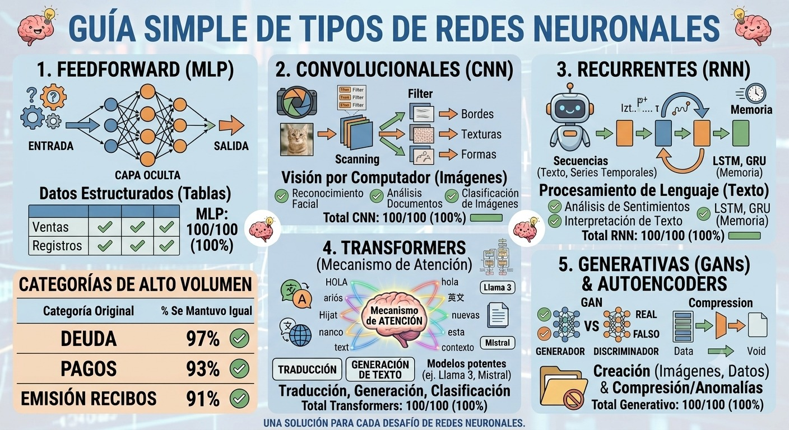

Redes neuronales¶

Tema central
Un LLM es, en el fondo, una red neuronal gigante. Este módulo explica qué es una red neuronal desde cero — neuronas, capas, cómo aprenden — y cierra con una simulación interactiva en tiempo real para ver el proceso de entrenamiento con tus propios ojos, no solo leerlo. Es la base conceptual del módulo de Arquitectura de Transformers.
Objetivos de aprendizaje¶
- Explicar qué hace una neurona artificial (entradas, pesos, sesgo, activación).
- Explicar por qué apilar neuronas en capas permite aprender patrones complejos.
- Describir, a alto nivel, el ciclo de entrenamiento (forward pass → error → backpropagation).
- Usar la simulación en vivo para observar cómo cambia la frontera de decisión mientras la red entrena.
Qué es una neurona artificial¶
Una neurona artificial toma varias entradas, las combina con un peso propio para cada una, suma un sesgo (bias), y pasa el resultado por una función de activación que decide "cuánto se enciende":
flowchart LR
X1["x1"] -->|"peso w1"| S(("Σ + sesgo"))
X2["x2"] -->|"peso w2"| S
X3["x3"] -->|"peso w3"| S
S --> A["función de
activación"]
A --> Y["salida"]- Pesos (weights): qué tan importante es cada entrada para esta neurona — son los números que la red ajusta al entrenar.
- Sesgo (bias): un valor extra que le permite a la neurona activarse (o no) incluso con entradas en cero.
- Activación: una función no lineal (ReLU, tanh, sigmoid) que le da a la red la capacidad de aprender patrones que no son simplemente una línea recta.
De neuronas a red: capas¶
Una sola neurona puede muy poco. El poder aparece al apilarlas en capas, donde la salida de una capa es la entrada de la siguiente:
flowchart LR
subgraph Entrada
I1((" "))
I2((" "))
end
subgraph "Capa oculta"
H1((" "))
H2((" "))
H3((" "))
end
subgraph Salida
O1((" "))
end
I1 --> H1 & H2 & H3
I2 --> H1 & H2 & H3
H1 & H2 & H3 --> O1Cada capa "oculta" (entre la entrada y la salida) aprende a reconocer patrones cada vez más abstractos — en una red que clasifica imágenes, las primeras capas detectan bordes simples, y las capas siguientes combinan esos bordes en formas más complejas.
Cómo aprende: el ciclo de entrenamiento¶
flowchart LR
In["Datos de
entrada"] --> FP["Forward pass:
calcular una predicción"]
FP --> Err["Comparar contra el
valor real (error/loss)"]
Err --> BP["Backpropagation:
ajustar los pesos"]
BP --> FPLa red no "sabe" nada al principio — sus pesos empiezan en valores aleatorios. En cada vuelta del ciclo: hace una predicción (forward pass), mide qué tan lejos estuvo de la respuesta correcta (loss), y ajusta cada peso un poquito en la dirección que reduce ese error (backpropagation + gradient descent). Repetido miles de veces, sobre miles de ejemplos, los pesos convergen a valores que "funcionan".
Nodo dice
No hace falta entender el cálculo detrás de backpropagation para usar LLMs — igual que no hace falta saber mecánica de motores para manejar un auto. Pero tener la intuición de "ajusta pesos de a poquito, muchas veces" te va a servir cuando leas sobre fine-tuning en el módulo Prompting vs. fine-tuning vs. RAG.
Simulación en tiempo real¶
Esta es la TensorFlow Playground, una herramienta pública de Google que entrena una red neuronal real, en vivo, en tu navegador — sin instalar nada. Le dimos una configuración de ejemplo (clasificar los puntos azules y naranjas de un círculo) para que arranques directo:
Qué mirar:
- Apretá el botón de ▶ play (arriba a la izquierda) para empezar a entrenar.
- El fondo de la grilla de la derecha es la frontera de decisión — mirá cómo pasa de ser aleatoria a separar los puntos azules de los naranjas, en vivo.
- Las líneas entre neuronas son los pesos: el grosor y el color (azul o naranja) representan su magnitud y signo, y cambian mientras la red aprende.
- El número de Training loss, arriba a la derecha, debería ir bajando — es el error que backpropagation intenta minimizar.
- Probá cambiar la forma de la red (
networkShape, los números de capas ocultas) desde los controles y volvé a entrenar — con menos neuronas, a veces la red no logra separar bien el círculo.
Ejercicio práctico¶
En la simulación, cambiá el dataset (arriba a la izquierda) de "circle" a "spiral" (espiral) y dejala entrenar. ¿La red con la arquitectura actual (2 capas ocultas, 4 y 2 neuronas) logra separar la espiral tan bien como separaba el círculo?
Ver solución
Con la arquitectura por defecto, la espiral es mucho más difícil de separar que el círculo — vas a ver que el loss se queda estancado en un valor alto y la frontera de decisión no logra "enroscarse" siguiendo la espiral. Para resolverla mejor hace falta una red más grande (más neuronas y/o más capas) y a veces más features de entrada (activar sinX, sinY en los controles). Esto ilustra un punto central: la capacidad de una red para aprender un patrón depende de su arquitectura, no solo de cuánto tiempo la dejes entrenar.
Autoevaluación¶
¿Qué hace backpropagation en el ciclo de entrenamiento?
- Genera nuevos datos de entrada para la red.
- Ajusta los pesos de la red en la dirección que reduce el error medido.
- Decide cuántas capas va a tener la red.
¿Qué representan los pesos (weights) de una neurona?
- Cuántas capas tiene la red en total.
- Qué tan importante es cada entrada para esa neurona en particular.
- El número de ejemplos usados para entrenar.
En la simulación del Playground, ¿qué representan el grosor y el color de las líneas entre neuronas?
- La velocidad de la conexión a internet.
- La magnitud y el signo de los pesos de la red.
- El nombre de cada capa.
Videos recomendados¶
But what is a Neural Network? | Deep learning, chapter 1 — 3Blue1Brown. La explicación visual de referencia sobre neuronas, capas y pesos — el mismo canal y la misma serie del video recomendado en Arquitectura de Transformers.
Más videos sobre este módulo:
| Video | Canal | Por qué verlo |
|---|---|---|
| ¿Qué es una Red Neuronal? Parte 1: La Neurona | Dot CSV (en español) | Explica la neurona artificial y su relación con la regresión lineal, en español y con buen ritmo. |
| ¿Qué es una Red Neuronal? Parte 2: La Red | Dot CSV (en español) | Continúa la serie explicando cómo se conectan varias neuronas en una red completa. |
Checklist de cierre¶
- Puedo explicar con mis palabras qué es un peso y qué es un sesgo.
- Dejé entrenar la simulación en vivo y vi la frontera de decisión estabilizarse.
- Probé el ejercicio con el dataset "spiral" y entendí por qué es más difícil que el círculo.
- Puedo conectar esto con el módulo de Arquitectura de Transformers: un transformer es, entre otras cosas, muchas de estas redes apiladas.